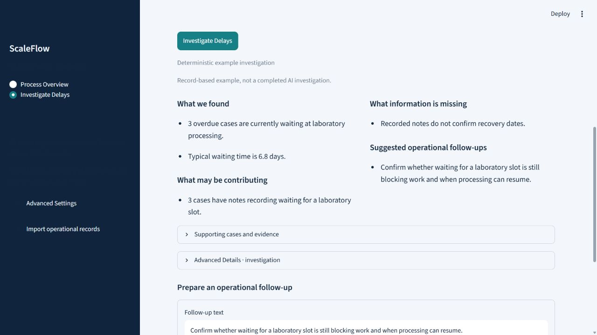

Healthcare Operations & Process Analysis
ScaleFlow
Make delays inspectable
An operational monitoring prototype for a fictional healthcare diagnostics company, showing where blood-test cases wait and which delays need follow-up.
Working portfolio prototype · Fictional demonstration dataThe business problem
For the fictional VitaFlow Health diagnostics company, a blood test passes through several teams and handoffs. Looking at current status alone makes it difficult to see where cases are waiting or understand recorded delays.
The operating process
This is the blood-testing service pathway being monitored, rather than an AI investigation workflow.
- 01Test requested→
- 02Sample collection→
- 03Sample received→
- 04Laboratory processing→
- 05Medical review→
- 06Report delivered
Cases may wait because of capacity constraints, incomplete handoffs, logistics disruptions, or missing operational updates. These are possible scenarios illustrated with fictional records, not claims about real healthcare companies.
What I built
- Track cases through the diagnostic process and calculate waiting times at each stage.
- Identify overdue cases and developing bottlenecks across normal, growing-demand, and disruption scenarios.
- Examine recorded case histories and exception notes to investigate delays.
- Validate Excel uploads and prepare editable operational follow-ups with an owner and deadline.
How it works
- 01Read process events→
- 02Identify delays→
- 03Inspect recorded evidence→
- 04Prepare follow-up
Inside the application
Application preview
Actual captures from the local application using the Growing Demand scenario. The investigation shown is a labelled deterministic example, not a verified live AI-agent execution. Click a screenshot to view it at full size.



Explore the project
Prepared investigations are labelled deterministic examples. Optional local Ollama investigation code exists, but live AI-agent execution has not been verified. Some delays have no recorded cause and require human review. Follow-ups use a separate visitor workspace. This prototype does not interpret clinical results or determine medical priority.